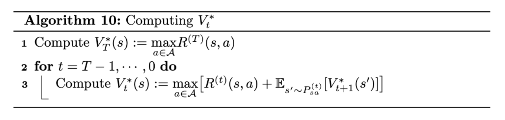
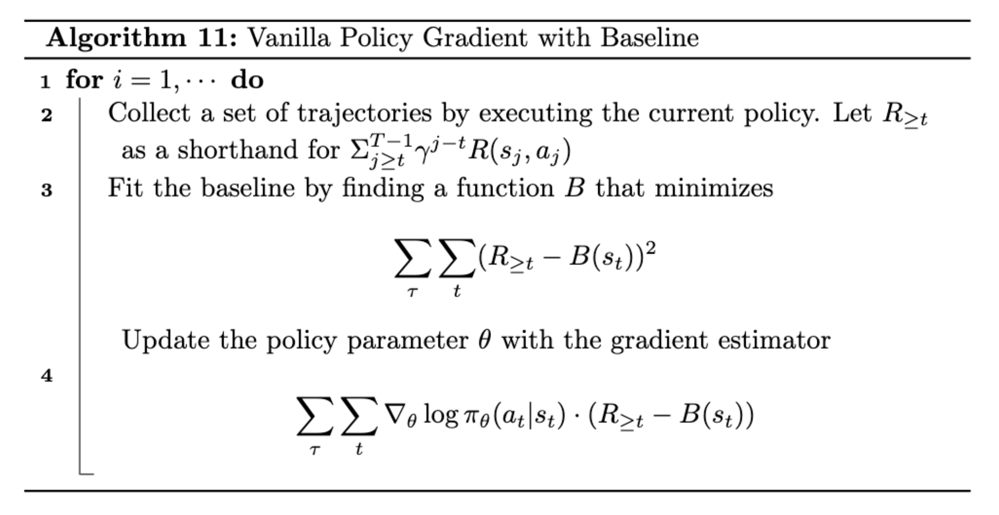

들어가며 (Introduction)
이번 포스트는 강화학습(Reinforcement Learning)의 두 번째 파트로, 연속 상태·행동 공간(continuous state-action space)에서의 제어(control) 문제와 정책을 직접 최적화하는 방법을 다룹니다. 앞서 다룬 이산적인 MDP의 가치 반복(Value Iteration)이 유한한 상태 집합을 전제로 했다면, 이번에는 로봇 제어나 자율주행처럼 상태가 연속적이고 차원이 높은 현실 문제로 시야를 넓혀 보겠습니다.
이번 강의에서 다룰 제어 기법들은 다음과 같습니다.
- LQR (Linear Quadratic Regulator): 시스템 동역학이 선형(linear)이고 비용 함수가 이차식(quadratic)인 경우. 정확한 해(exact solution)를 비교적 쉽게 구할 수 있습니다.
- DDP (Differential Dynamic Programming): 동역학과 비용 함수가 비선형(nonlinear)이지만, 국소적으로 선형 / 2차 근사(local linear / 2nd-order approximation)를 취해 LQR 틀로 환원하는 방법입니다.
- LQG (Linear Quadratic Gaussian): LQR에 프로세스 노이즈(process noise)와 관측 노이즈(observation noise)가 더해진, 부분 관측 환경을 위한 방법입니다.
그리고 마지막으로, 가치함수나 Q함수의 개념 없이 정책 자체를 경사 상승으로 학습하는 Policy Gradient 방법까지 살펴보겠습니다.
1. 유한 시계 MDP (Finite-Horizon MDPs)
본격적인 제어 기법에 앞서, 이들의 토대가 되는 유한 시계 MDP를 복습하겠습니다.
1.1. 최적 가치함수와 정책의 재정의
기존의 무한 시계(infinite-horizon) MDP에서 최적 가치함수와 최적 정책은 다음과 같이 정의되었습니다.
\[ V^{\pi^*}(s) = R(s) + \max_{a \in \mathcal{A}} \gamma \sum_{s' \in \mathcal{S}} P_{sa}(s') V^{\pi^*}(s') \]
\[ \pi^*(s) = \arg\max_{a \in \mathcal{A}} \gamma \sum_{s' \in \mathcal{S}} P_{sa}(s') V^{\pi^*}(s') \]
이번에는 이산(discrete)과 연속(continuous) 두 경우를 모두 포괄하기 위해 표기를 통일하겠습니다.
- 이산 합 \(\sum_{s' \in \mathcal{S}} P_{sa}(s') V^{\pi^*}(s')\) 대신 기댓값 표기 \(\mathbb{E}_{s' \sim P_{sa}}[V^{\pi^*}(s')]\)를 사용합니다.
- 또한 보상이 상태뿐 아니라 행동에도 의존한다고 가정합니다. 즉 \(R(s, a)\) 형태입니다.
이를 반영하면 최적 정책은 다음과 같이 쓸 수 있습니다.
\[ \pi^*(s) = \arg\max_{a \in \mathcal{A}} \; R(s, a) + \gamma \, \mathbb{E}_{s' \sim P_{sa}}[V^{\pi^*}(s')] \]
1.2. 유한 시계 MDP의 정의
유한 시계 MDP에서는 시간 지평(time horizon) \(T > 0\)가 존재하므로, MDP의 정의 자체가 약간 달라집니다.
\[ (\mathcal{S}, \mathcal{A}, P_{sa}^{(t)}, T, R^{(t)}) \]
여기서 핵심적인 변화를 짚어보겠습니다.
누적 보상(Payoff)의 변화: 무한 합 \(\sum_{t=0}^{\infty} R(s_t, a_t)\gamma^t\) 대신, 유한한 합 \[ R(s_0, a_0) + R(s_1, a_1) + \cdots + R(s_T, a_T) \] 가 됩니다.
할인율(discount factor)의 불필요성: 사실 더 이상 할인율 \(\gamma\)를 쓸 필요가 없습니다. 원래 \(\gamma\)를 도입한 이유 중 하나는 무한 합을 유한하게 만들기 위함이었습니다. 보상이 상수 \(\bar{R}\)로 유계(bounded)라고 가정하면, \[ \sum_{t=0}^{\infty} R(s_t)\gamma^t \le \bar{R} \sum_{t=0}^{\infty} \gamma^t \] 처럼 등비급수의 합으로 수렴함이 보장되었기 때문입니다. 유한 시계에서는 합 자체가 유한하므로 이 장치가 필요 없습니다.
1.3. 비정상 정책 (Non-stationary Policy)
유한 시계 MDP의 가장 중요한 특징 중 하나는 최적 정책이 비정상(non-stationary)일 수 있다는 점입니다. 즉, 시간에 따라 최적 행동이 달라질 수 있습니다.
\[ \pi^{(t)} : \mathcal{S} \rightarrow \mathcal{A}^{(t)} \]
여기서 위첨자 \((t)\)는 시점 \(t\)에서의 정책을 의미합니다.
- 왜 이런 일이 발생할까요? 직관적인 예를 들어 보겠습니다. +10의 보상을 얻는 데에는 오랜 시간이 걸리지만, +1의 보상은 즉시 얻을 수 있다고 합시다. 만약 남은 스텝이 충분하지 않다면, 큰 보상 +10을 노리기보다 즉시 얻을 수 있는 +1을 선택하는 것이 합리적입니다.
- 즉, 환경(Environment)뿐 아니라 남은 시간(Time Left)이 우리의 정책에 영향을 미칩니다.
이런 이유로 전이 확률 분포와 보상 역시 시간에 따라 달라질 수 있습니다.
\[ s_{t+1} \sim P_{s_t, a_t}^{(t)}, \qquad R^{(t)}(s_t, a_t) \]
1.4. 가치함수와 동적 계획법 (Dynamic Programming)
유한 시계에서 가치함수는 시점 \(t\)에 의존하는 형태가 됩니다.
\[ V_t(s) = \mathbb{E}\left[ R^{(t)}(s_t, a_t) + \cdots + R^{(T)}(s_T, a_T) \,\middle|\, s_t = s, \pi \right] \]
그렇다면 이 설정에서 최적 가치함수를 어떻게 찾을 수 있을까요? 핵심은 뒤에서부터 거꾸로 풀어가는(backward) 관찰입니다.
게임의 끝(\(t = T\)): 마지막 시점에서는 미래가 없으므로 최적 가치가 자명합니다. 단순히 그 시점의 보상을 최대화하면 됩니다. \[ \forall s \in \mathcal{S}: \quad V_T^*(s) := \max_{a \in \mathcal{A}} R^{(T)}(s, a) \]
다른 시점(\(0 \le t < T\)): 만약 다음 시점의 최적 가치 \(V_{t+1}^*(s)\)를 이미 알고 있다면, 벨만 방정식(Bellman equation) 형태로 현재 시점의 최적 가치를 구할 수 있습니다. \[ \forall t < T, s \in \mathcal{S}: \quad V_t^*(s) := \max_{a \in \mathcal{A}} \left[ R^{(t)}(s, a) + \mathbb{E}_{s' \sim P_{sa}^{(t)}} [V_{t+1}^*(s')] \right] \]
이는 미래(\(T\))에서 현재(\(0\))로 거슬러 올라가며 푸는 전형적인 동적 계획법 구조입니다.
알고리즘: \(V_t^*\) 계산
위 관찰을 알고리즘으로 정리하면 다음과 같습니다.

- \(V_T^*(s) := \max_{a \in \mathcal{A}} R^{(T)}(s, a)\) 를 계산한다.
- \(t = T-1, \cdots, 0\) 에 대해 다음을 반복한다:
- \(\quad V_t^*(s) := \max_{a \in \mathcal{A}} \left[ R^{(t)}(s, a) + \mathbb{E}_{s' \sim P_{sa}^{(t)}}[V_{t+1}^*(s')] \right]\) 를 계산한다.
(ADVANCED) 벨만 연산자의 수축성 (Contraction)
흥미롭게도 우리가 익숙한 표준 가치 반복(Value Iteration)은 이 일반화된 알고리즘에서 시간을 추적하지 않는 특수한 경우로 해석할 수 있습니다.
\(V_t\)를 \(t\)번째 스텝의 가치함수라 할 때, 다음을 증명할 수 있습니다.
\[ \|V_{t+1} - V^*\|_\infty = \|B(V_t) - V^*\|_\infty \le \gamma \|V_t - V^*\|_\infty \le \gamma^t \|V_1 - V^*\|_\infty \]
- 여기서 \(B\)는 벨만 갱신(Bellman update) 연산자를 의미하며, \(\|f(x)\|_\infty := \sup_x |f(x)|\)는 무한대 노름(sup-norm)입니다.
- 이 부등식이 의미하는 바는, 벨만 연산자 \(B\)가 적용될 때마다 최적 가치 \(V^*\)와의 거리가 매번 \(\gamma\)배 이하로 줄어든다는 것입니다.
- 따라서 벨만 연산자 \(B\)는 \(\gamma\)-수축 연산자(\(\gamma\)-contracting operator)입니다. \(\gamma < 1\)이므로 반복적으로 적용하면 거리가 \(\gamma^t\)로 기하급수적으로 줄어들어, 가치 반복이 유일한 고정점(fixed point)인 \(V^*\)로 수렴함이 보장됩니다.
2. 선형 이차 조절기 (Linear Quadratic Regulation, LQR)
2.1. LQR의 설정
LQR은 유한 시계 MDP의 특수한 경우로, 정확한 해를 비교적 쉽게 구할 수 있는 경우입니다. 로봇공학(robotics) 등에서 널리 활용됩니다.
연속 설정 \(\mathcal{S} = \mathbb{R}^d, \mathcal{A} = \mathbb{R}^d\)를 가정하고, 다음 두 가지 핵심 가정을 둡니다.
(1) 선형 전이 with 노이즈 (Linear transitions with noise):
\[ s_{t+1} = A_t s_t + B_t a_t + w_t \]
- \(A_t, B_t \in \mathbb{R}^{d \times d}\)는 시스템 동역학을 정의하는 행렬입니다.
- \(w_t \sim \mathcal{N}(0, \Sigma_t)\)는 평균이 0인 가우시안 노이즈입니다.
- 뒤에서 밝혀지겠지만, 이 (평균 0의) 노이즈는 최적 정책에 영향을 주지 않습니다. 이는 LQR의 매우 중요한 성질입니다.
(2) 이차 보상 (Quadratic rewards):
\[ R^{(t)}(s_t, a_t) = -s_t^\top U_t s_t - a_t^\top W_t a_t \]
- \(U_t \in \mathbb{R}^{d \times d}, W_t \in \mathbb{R}^{d \times d}\)는 양의 정부호(positive definite) 행렬입니다. 따라서 보상은 항상 음수(\(R^{(t)} < 0\))가 됩니다.
- 이 보상의 의미를 직관적으로 살펴보겠습니다. 만약 \(U_t = W_t = I_d\) (항등행렬)라면, \[ R_t = -\|s_t\|^2 - \|a_t\|^2 \] 가 됩니다. 즉, 상태 \(s_t\)가 원점(origin)에 가까울수록, 그리고 행동 \(a_t\)가 작을수록 보상이 커집니다.
- 이는 정규화(Regularization)로 해석할 수 있습니다. 상태를 목표 지점(원점)에 가깝게 유지하면서도 과도한 제어 입력을 쓰지 않도록 유도하는 것입니다. (자율주행차가 차선 중앙을 유지하되 핸들을 거칠게 꺾지 않는 상황을 떠올리면 됩니다.)
2.2. LQR 알고리즘의 두 단계
LQR 알고리즘은 크게 두 단계로 구성됩니다.
- Step 1. 행렬 \(A, B, \Sigma\)를 추정한다.
- Step 2. 행렬을 안다고 가정하고, 동적 계획법을 이용해 최적 정책을 유도한다.
2.3. LQR - Step 1: 행렬 추정
행렬 \(A, B, \Sigma\)는 어떻게 추정할 수 있을까요? 가치 근사(Value Approximation)와 유사한 아이디어를 사용합니다.
- (1) 전이 데이터 수집: 임의의 정책 \(\pi\)를 실행하여 전이 데이터 \((s_t, a_t, s_{t+1})\)를 수집합니다.
- (2) 선형 회귀(Linear Regression): 다음 최소제곱 문제를 풀어 \(A, B\)를 찾습니다. \[ \arg\min_{A, B} \sum_{i=1}^{n} \sum_{t=0}^{T-1} \left\| s_{t+1}^{(i)} - \left(A s_t^{(i)} + B a_t^{(i)}\right) \right\|^2 \] 이는 다음 상태 \(s_{t+1}\)를 현재 상태와 행동의 선형 결합 \(As_t + Ba_t\)로 가장 잘 예측하도록 행렬을 맞추는 과정입니다.
- (3) 노이즈 공분산 \(\Sigma\) 추정: GDA(Gaussian Discriminant Analysis)에서 본 기법을 활용합니다. 먼저 각 샘플의 잔차(residual)를 계산합니다. \[ w_t^{(i)} = s_{t+1}^{(i)} - A s_t^{(i)} - B a_t^{(i)} \] 그 다음 잔차들의 외적(outer product) 평균으로 공분산을 추정합니다. \[ \Sigma = \frac{1}{N} \sum_i w_t^{(i)} (w_t^{(i)})^\top \]
2.4. LQR - Step 2: 최적 정책 유도
이제 행렬 \(A, B, \Sigma\)를 안다고 가정하고, 동적 계획법으로 최적 정책을 유도하겠습니다. 우리에게 주어진 것은 다음과 같습니다.
\[ \begin{cases} s_{t+1} = A_t s_t + B_t a_t + w_t & A_t, B_t, U_t, W_t, \Sigma_t \text{ known} \\ R^{(t)}(s_t, a_t) = -s_t^\top U_t s_t - a_t^\top W_t a_t \end{cases} \]
목표는 \(V_t^*\)를 계산하는 것입니다.
마지막 시점 \(T\)의 풀이
먼저 마지막 시점 \(T\)를 살펴보겠습니다.
\[ \begin{aligned} V_T^*(s_T) &= \max_{a_T \in \mathcal{A}} R_T(s_T, a_T) \\ &= \max_{a_T \in \mathcal{A}} \left( -s_T^\top U_T s_T - a_T^\top W_T a_T \right) \\ &= -s_T^\top U_T s_T \end{aligned} \]
- \(W_T\)가 양의 정부호이므로 \(-a_T^\top W_T a_T \le 0\)이고, 이 항은 \(a_T = 0\)일 때 최대(=0)가 됩니다.
- 따라서 마지막 시점의 최적 행동은 \(a_T = 0\)이며, 최적 가치는 \(-s_T^\top U_T s_T\)만 남습니다.
이제 \(t < T\)에 대해, \(V_{t+1}^*\)를 안다고 가정하고 점화식(recurrence)을 유도하기 위해 몇 가지 보조정리(lemma)를 도입하겠습니다.
(ADVANCED) 핵심 보조정리들
Lemma 1. (이차 형식의 보존) 만약 \(V_{t+1}^*\)가 \(s_{t+1}\)에 대한 이차함수(quadratic function)라면, \(V_t^*\) 역시 이차함수입니다.
- 즉, 어떤 행렬 \(\Phi\)와 스칼라 \(\Psi\)가 존재하여 다음과 같이 쓸 수 있습니다. \[ V_{t+1}^*(s_{t+1}) = s_{t+1}^\top \Phi_{t+1} s_{t+1} + \Psi_{t+1}, \qquad V_t^*(s_t) = s_t^\top \Phi_t s_t + \Psi_t \]
- 앞서 본 마지막 시점 \(t = T\)의 경우, \(V_T^*(s) = -s^\top U_T s\) 였으므로 초기값은 다음과 같습니다. \[ \Phi_T = -U_T, \qquad \Psi_T = 0 \]
Lemma 2. (선형 정책) 최적 정책은 상태에 대한 선형 함수임을 보일 수 있습니다. 즉, 최적 행동을 다음 형태로 쓸 수 있습니다.
\[ a_t^* = L_t s_t \]
여기서 \(L_t\)는 시점 \(t\)에 따라 달라지는 (상태와 무관한) 행렬입니다.
(ADVANCED) 점화식 유도
Lemma 1에 의해, \(V_{t+1}^*\)를 안다는 것은 \(\Phi_{t+1}\)과 \(\Psi_{t+1}\)을 안다는 것과 동치입니다. 벨만 갱신식을 전개해 보겠습니다.
\[ \begin{aligned} V_t^*(s_t) &= s_t^\top \Phi_t s_t + \Psi_t \\ &= \max_{a_t} \left[ R^{(t)}(s_t, a_t) + \mathbb{E}_{s_{t+1} \sim P_{s_t, a_t}^{(t)}}[V_{t+1}^*(s_{t+1})] \right] \\ &= \max_{a_t} \left[ -s_t^\top U_t s_t - a_t^\top W_t a_t + \mathbb{E}_{s_{t+1} \sim \mathcal{N}(A_t s_t + B_t a_t, \, \Sigma_t)} \left[ s_{t+1}^\top \Phi_{t+1} s_{t+1} + \Psi_{t+1} \right] \right] \end{aligned} \]
- 마지막 항은 \(a_t\)에 대한 이차함수이므로, 편미분(partial derivative)을 0으로 두어 쉽게 최적화할 수 있습니다. (직접 유도해 보세요.)
- 이 과정에서 다음과 같은 가우시안 노이즈의 이차형식 기댓값 성질이 사용됩니다. \(w_t \sim \mathcal{N}(0, \Sigma_t)\)일 때, \[ \mathbb{E}\left[ w_t^\top \Phi_{t+1} w_t \right] = \text{tr}(\Sigma_t \Phi_{t+1}) \] 이는 노이즈가 \(\Psi\) 항(상수항)에만 영향을 주고, \(\Phi\) 항(상태 의존 항)에는 영향을 주지 않음을 시사합니다. 이것이 노이즈가 최적 정책과 무관해지는 이유의 핵심입니다.
(ADVANCED) 최적 행동과 이산 리카티 방정식
위 최적화를 수행하면 다음과 같은 최적 행동을 얻습니다.
\[ a_t^* = \left[ \left(B_t^\top \Phi_{t+1} B_t - W_t\right)^{-1} B_t \Phi_{t+1} A_t \right] \cdot s_t = L_t s_t \]
- 보시다시피 최적 정책은 상태 \(s_t\)에 대해 선형(linear)입니다 (Lemma 2 확인).
\(\Phi_t, \Psi_t\)에 대해 풀면, 다음의 이산 리카티 방정식(Discrete Riccati Equations)을 얻습니다.
\[ \Phi_t = A_t^\top \left( \Phi_{t+1} - \Phi_{t+1} B_t \left(B_t^\top \Phi_{t+1} B_t - W_t\right)^{-1} B_t \Phi_{t+1} \right) A_t - U_t \]
\[ \Psi_t = -\text{tr}(\Sigma_t \Phi_{t+1}) + \Psi_{t+1} \]
Lemma 3. (노이즈 독립성) \(\Phi_t\)는 \(\Psi\)에도, 노이즈 \(\Sigma_t\)에도 의존하지 않습니다.
- 위 리카티 방정식을 보면 \(\Phi_t\)의 점화식에는 \(\Sigma_t\)가 전혀 등장하지 않습니다. 오직 \(\Psi_t\)의 점화식에만 \(-\text{tr}(\Sigma_t \Phi_{t+1})\) 형태로 등장합니다.
- 그런데 최적 정책 \(L_t\)는 \(A_t, B_t, \Phi_{t+1}\)만의 함수이므로, 최적 정책 역시 노이즈에 의존하지 않습니다.
- 정리하면, \(\Psi_t\)는 \(\Sigma_t\)에 의존하고 \(V_t^*\)도 \(\Sigma_t\)에 의존하지만, 우리가 정책을 구하기 위해 실제로 추적해야 하는 것은 \(\Phi_t\)뿐입니다. Lemma 3 덕분에 \(\Phi_t\)만 갱신하면 충분합니다.
핵심 요약: LQR에서는 (1) 노이즈 추정 없이도 정책을 구할 수 있고, (2) \(\Phi_t\)에 대한 리카티 방정식을 마지막 시점부터 거꾸로 풀기만 하면 선형 최적 정책 \(a_t^* = L_t s_t\)를 얻을 수 있습니다.
3. 동역학의 선형화 (Linearization of Dynamics)
현실에는 비선형 동역학(nonlinear dynamics)이 무수히 많습니다. LQR은 선형 시스템을 전제하므로, 비선형 시스템을 LQR로 다루려면 선형화(linearization)가 필요합니다.
- 선형화가 효과적인 조건은, 시스템이 대부분의 시간을 어떤 상태 \(\bar{s}_t\) 근처에서 보내고, 우리가 취하는 행동도 \(\bar{a}_t\) 근처일 때입니다. (차선 중앙을 유지하려는 자율주행차를 떠올리면 됩니다.)
3.1. 테일러 전개를 이용한 선형화
선형화는 테일러 전개(Taylor Expansion)로 수행합니다.
- 1차원, 상태만 의존하는 경우: 전이 함수 \(F\)가 상태에만 의존한다면, \[ s_{t+1} = F(s_t) \approx F(\bar{s}_t) + F'(\bar{s}_t) \cdot (s_t - \bar{s}_t) \]
- 일반적인 경우 (상태와 행동 모두 의존): \[ s_{t+1} \approx F(\bar{s}_t, \bar{a}_t) + \nabla_s F(\bar{s}_t, \bar{a}_t) \cdot (s_t - \bar{s}_t) + \nabla_a F(\bar{s}_t, \bar{a}_t) \cdot (a_t - \bar{a}_t) \]
이 식을 정리하면 다음과 같은 아핀(affine) 형태가 됩니다.
\[ s_{t+1} \approx A s_t + B a_t + \kappa \]
- 여기서 \(A = \nabla_s F\), \(B = \nabla_a F\)이고 \(\kappa\)는 상수항입니다.
- 따라서 \(s_{t+1}\)은 \(s_t, a_t\)에 대해 (상수항 \(\kappa\)를 제외하면) 선형이 되며, 이렇게 근사된 시스템에 LQR을 적용할 수 있습니다.
4. 미분 동적 계획법 (Differential Dynamic Programming, DDP)
DDP는 시스템이 어떤 궤적(trajectory)을 따라가야 하는 상황(예: 로켓의 비행 경로)을 다룹니다. 핵심 아이디어는 궤적을 이산적인 시점들로 쪼갠 뒤, 각 궤적 점 주변에서 선형화를 적용할 수 있도록 중간 목표(intermediary goal)들을 설정하는 것입니다.
DDP는 다음 네 단계로 구성됩니다.
- 우리가 따라가고자 하는 궤적을 근사하는 궤적 \(s_t^*\)를 마련한다.
- 각 궤적 점 주변에서 동역학을 선형화한다.
- 이제 문제가 LQR 틀로 재작성되었으므로, LQR로 최적 정책 \(\pi_t\)를 구한다.
- 새 정책으로 새 궤적을 생성하고, Step 2로 돌아간다.
4.1. DDP - Step 1: 초기 궤적 샘플링
먼저 단순한(naive) 컨트롤러를 사용해 궤적을 하나 샘플링합니다.
\[ s_0^*, a_0^* \rightarrow s_1^*, a_1^* \rightarrow \cdots \]
- 이것은 DDP의 ‘시작점(initial point)’에 불과하므로, 정확할 필요가 없습니다. 이후 반복을 통해 점차 개선됩니다.
4.2. DDP - Step 2: 동역학과 보상의 근사
각 궤적 점 \(s_t^*\) 주변에서 동역학을 선형화합니다.
\[ s_{t+1} \approx F(s_t^*, a_t^*) + \nabla_s F(s_t^*, a_t^*) \cdot (s_t - s_t^*) + \nabla_a F(s_t^*, a_t^*) \cdot (a_t - a_t^*) \]
- 이는 \(s_{t+1} \approx A s_t + B a_t + \kappa\) 형태가 됩니다. 여기서 상수항 \(\kappa\)가 거슬리는데, 상태 \(s_t\)에 차원 하나를 추가(absorption)하면 \(\kappa\)를 흡수하여 깔끔하게 \[ s_{t+1} \approx A_t s_t + B_t a_t \] 형태로 만들 수 있습니다.
(ADVANCED) 보상의 2차 테일러 전개
보상 \(R^{(t)}\)에 대해서도 유사한 유도를 적용하는데, 이번에는 2차(second-order) 테일러 전개를 사용합니다.
\[ \begin{aligned} R(s_t, a_t) \approx \; & R(s_t^*, a_t^*) + \nabla_s R(s_t^*, a_t^*)(s_t - s_t^*) + \nabla_a R(s_t^*, a_t^*)(a_t - a_t^*) \\ & + \frac{1}{2}(s_t - s_t^*)^\top H_{ss}(s_t - s_t^*) + (s_t - s_t^*)^\top H_{sa}(a_t - a_t^*) \\ & + \frac{1}{2}(a_t - a_t^*)^\top H_{aa}(a_t - a_t^*) \end{aligned} \]
- 여기서 \(H_{xy}\)는 보상 \(R\)의 헤시안(Hessian) 행렬에서 \(x\)와 \(y\)에 대한 항을 의미합니다. (\(H_{ss}\)는 상태-상태, \(H_{aa}\)는 행동-행동, \(H_{sa}\)는 상태-행동 교차항입니다.)
이차 보상 형태로의 환원
이 2차 전개는 결국 LQR의 이차 보상 형태로 환원될 수 있습니다.
\[ R^{(t)}(s_t, a_t) \approx -s_t^\top U_t s_t - a_t^\top W_t a_t \]
- 이 환원을 이해하기 위해, 1차원 예시로 다음 항등식을 떠올려 보겠습니다. \[ \begin{bmatrix} 1 & x \end{bmatrix} \cdot \begin{bmatrix} a & b \\ b & c \end{bmatrix} \cdot \begin{bmatrix} 1 \\ x \end{bmatrix} = a + 2bx + cx^2 \]
- 즉, 상수항·1차항·2차항이 모두 포함된 표현을 (확장된 좌표를 사용하면) 하나의 이차형식(quadratic form)으로 묶을 수 있습니다. 이것이 1차/2차 테일러 항들을 LQR의 이차 보상 형태로 흡수하는 원리입니다.
4.3. DDP - Step 3: LQR 적용
이제 동역학 \(s_{t+1} \approx A_t s_t + B_t a_t\)와 보상 \(R^{(t)}(s_t, a_t) \approx -s_t^\top U_t s_t - a_t^\top W_t a_t\)를 얻었으므로, 문제가 완전히 LQR 틀로 재작성되었습니다. 따라서 앞서 배운 LQR을 그대로 적용해 최적 정책 \(\pi_t\)를 구하면 됩니다.
4.4. DDP - Step 4: 궤적 갱신 및 반복
새 정책 \(\pi_t\)가 생겼으므로, 이를 이용해 새로운 궤적을 샘플링합니다.
\[ s_0^*, \pi_0(s_0^*) \rightarrow s_1^*, \pi_1(s_1^*) \rightarrow \cdots \rightarrow s_T^* \]
- 중요: 이 궤적을 계산할 때는 선형 근사가 아니라 실제 동역학 \(F\)를 사용합니다. 즉, \[ s_{t+1}^* = F(s_t^*, a_t^*) \]
- 이렇게 갱신된 궤적을 얻으면 다시 Step 2로 돌아가, 어떤 정지 조건(stopping criterion)이 만족될 때까지 반복합니다. 반복을 거듭하며 선형화 기준점이 점점 더 좋은 궤적으로 이동하므로 근사 품질이 향상됩니다.
5. 부분 관측 MDP (Partially Observable MDPs, POMDPs)
5.1. POMDP의 동기와 정의
현실에서는 종종 완전한 상태 \(s\)를 관측할 수 없습니다.
- 예를 들어 자율주행차는 카메라로 다양한 이미지를 수집하지만, 여전히 주변의 ‘완전한’ 상태를 관측할 수는 없습니다.
이런 상황을 모델링하기 위해 부분 관측 MDP(POMDP)가 필요합니다. 새로운 변수인 관측(observation) \(o_t\)를 도입하는데, 이는 현재 상태 \(s_t\)가 주어졌을 때 어떤 조건부 분포를 따릅니다.
\[ o_t | s_t \sim O(o | s) \]
유한 시계 POMDP는 다음 튜플로 정의됩니다.
\[ (\mathcal{S}, \mathcal{O}, \mathcal{A}, P_{sa}, T, R) \]
5.2. 신념 상태 (Belief State)
POMDP에서는 관측에 기반하여 신념 상태(belief state)를 유지해야 합니다. POMDP에서의 정책은 이 신념 상태를 행동으로 매핑합니다.
- 예를 들어, 자율주행차가 카메라 앞에서 어떤 물체를 감지했을 때, 그것이 보행자일 확률 80%, 다른 차일 확률 20%처럼 확률 분포 형태로 상태를 추정할 수 있습니다.
이번 강의에서는 관측 \(o_1, \cdots, o_t\)를 다음과 같은 선형-가우시안 형태로 가정합니다. \(y_t \in \mathbb{R}^n\)이고 \(m < n\)일 때,
\[ \begin{cases} y_t = C \cdot s_t + v_t \\ s_{t+1} = A \cdot s_t + B \cdot a_t + w_t \end{cases} \]
- \(C \in \mathbb{R}^{n \times d}\)는 압축 행렬(compression matrix)로, 고차원 상태를 저차원 관측으로 사영합니다.
- \(v_t\)는 가우시안 센서 노이즈(sensor noise)입니다.
6. 선형 이차 가우시안 (Linear Quadratic Gaussian, LQG)
LQG는 부분 관측 환경을 위한 LQR의 확장으로, 크게 세 단계로 진행됩니다. 핵심은 관측으로부터 상태 분포를 추정(Kalman Filter)한 뒤, 그 추정치에 LQR을 적용하는 것입니다.
6.1. LQG - Step 1: 상태 분포 추정
먼저 우리가 가진 관측들에 기반하여 가능한 상태들에 대한 분포를 계산합니다. 즉, 다음 분포의 파라미터 \(s_{t|t}, \Sigma_{t|t}\)를 구하려 합니다.
\[ s_t | y_1, \cdots, y_t \sim \mathcal{N}(s_{t|t}, \Sigma_{t|t}) \]
이를 위해 칼만 필터 알고리즘(Kalman Filter Algorithm)을 사용합니다.
6.2. 칼만 필터 알고리즘 (Kalman Filter Algorithm)
(ADVANCED) 동기: 왜 칼만 필터가 필요한가
논의를 단순화하기 위해 동역학에 행동 의존성이 없다고 가정하겠습니다.
\[ \begin{cases} s_{t+1} = A s_t + w_t, & w_t \sim \mathcal{N}(0, \Sigma_s) \\ y_t = C s_t + v_t, & v_t \sim \mathcal{N}(0, \Sigma_y) \end{cases} \]
- 모든 노이즈가 가우시안이므로, 결합 분포 \((s_1 \cdots s_t \; y_1 \cdots y_t)^\top\) 역시 가우시안임이 자명합니다. \[ (s_1 \cdots s_t \; y_1 \cdots y_t)^\top \sim \mathcal{N}(\mu, \Sigma) \quad \text{for some } \mu, \Sigma \]
- 그렇다면 가우시안의 주변화(marginalization) 공식을 써서 \(s_t | y_1, \cdots, y_t \sim \mathcal{N}(s_{t|t}, \Sigma_{t|t})\)를 직접 구할 수도 있습니다.
- 그러나 이는 계산적으로 매우 비쌉니다. \(t \times t\) 크기의 행렬을 다뤄야 하는데, 행렬 역산(inversion) 비용이 \(O(t^3)\)이며, 매 시점 반복하면 \(O(t^4)\)에 달합니다. 시간이 갈수록 비용이 폭발합니다.
(ADVANCED) 효율적인 해법: Predict & Update
칼만 필터는 훨씬 효율적인 방법을 제공합니다.
- 평균과 분산을 시간에 따라 상수 시간(constant time in \(t\))으로 갱신합니다. (전체적으로 \(O(t)\).)
- 두 가지 기본 단계로 구성됩니다: 예측(Predict)과 갱신(Update).
- \(s_t | y_1, \cdots, y_t\)의 분포를 안다고 가정하고, 먼저 \(s_{t+1} | y_1, \cdots, y_t\)(예측)를 계산한 뒤, \(s_{t+1} | y_1, \cdots, y_{t+1}\)(갱신)로 업데이트하며 시점을 반복합니다.
예측 단계 (Predict Step):
현재 분포 \(s_t | y_1, \cdots, y_t \sim \mathcal{N}(s_{t|t}, \Sigma_{t|t})\)를 안다고 합시다. 그러면 다음 상태의 분포 역시 가우시안입니다.
\[ s_{t+1} | y_1, \cdots, y_t \sim \mathcal{N}(s_{t+1|t}, \Sigma_{t+1|t}) \]
여기서 파라미터는 다음과 같습니다.
\[ \begin{cases} s_{t+1|t} = A s_{t|t} \\ \Sigma_{t+1|t} = A \Sigma_{t|t} A^\top + \Sigma_s \end{cases} \]
- 직관적으로, 평균은 동역학 \(A\)를 통과시켜 예측하고, 공분산은 \(A\)로 변환된 불확실성(\(A\Sigma_{t|t}A^\top\))에 프로세스 노이즈의 불확실성(\(\Sigma_s\))을 더해 증가시킵니다. 예측만 하면 불확실성이 커집니다.
갱신 단계 (Update Step):
예측된 분포 \(s_{t+1|t}, \Sigma_{t+1|t}\) (즉 \(s_{t+1} | y_1, \cdots, y_t \sim \mathcal{N}(s_{t+1|t}, \Sigma_{t+1|t})\))가 주어지면, 새로운 관측 \(y_{t+1}\)을 반영하여 다음을 증명할 수 있습니다.
\[ s_{t+1} | y_1, \cdots, y_{t+1} \sim \mathcal{N}(s_{t+1|t+1}, \Sigma_{t+1|t+1}) \]
\[ \begin{cases} s_{t+1|t+1} = s_{t+1|t} + K_t(y_{t+1} - C s_{t+1|t}) \\ \Sigma_{t+1|t+1} = \Sigma_{t+1|t} - K_t C \Sigma_{t+1|t} \end{cases} \]
- 여기서 칼만 게인(Kalman Gain) \(K_t\)는 다음과 같이 정의됩니다. \[ K_t := \Sigma_{t+1|t} C^\top (C \Sigma_{t+1|t} C^\top + \Sigma_y)^{-1} \]
- 직관적으로, \((y_{t+1} - C s_{t+1|t})\)는 예측 관측과 실제 관측의 차이(innovation)입니다. 칼만 게인은 이 오차를 얼마나 신뢰하여 추정치를 보정할지 결정하는 가중치입니다. 관측 노이즈 \(\Sigma_y\)가 크면 게인이 작아져 관측을 덜 믿고, 작으면 게인이 커져 관측을 더 신뢰합니다. 관측을 반영하면 불확실성이 줄어듭니다.
- 핵심: 갱신 단계는 시점 \(t\) 이전의 관측들을 전혀 필요로 하지 않습니다. 오직 직전 분포에만 의존하므로, 과거 전체를 저장하지 않아도 되어 효율적입니다.
6.3. LQG - Step 2/3: LQR과의 결합
이제 분포 \(s_t | y_1, \cdots, y_t\)를 계산했으므로, 그 평균 \(s_{t|t}\)를 상태 \(s_t\)의 최선의 근사치로 사용합니다.
그리고 행동을 다음과 같이 설정합니다.
\[ a_t := L_t s_{t|t} \]
- 여기서 \(L_t\)는 일반적인 LQR 알고리즘에서 나온 정책 행렬입니다.
왜 이것이 동작할까요?
- \(s_{t|t}\)는 실제 상태 \(s_t\)의 노이즈가 섞인 근사치입니다. 따라서 \(a_t = L_t s_{t|t}\)를 쓰는 것은 LQR에 노이즈를 더 추가하는 것과 동등합니다.
- 그런데 우리는 앞서 LQR이 노이즈에 독립(independent of noise)임을 증명했습니다 (Lemma 3). 따라서 추정된 상태를 그대로 LQR 정책에 대입해도 최적성이 유지됩니다. 이것이 LQG가 추정(estimation)과 제어(control)를 분리해서 풀 수 있는 이유입니다. (이를 분리 원리(separation principle)라고도 합니다.)
6.4. LQG 요약
LQG 알고리즘 전체를 정리하면 다음과 같습니다.
- 순방향 패스(Forward Pass): 칼만 필터를 돌려 \(K_t, \Sigma_{t|t}, s_{t|t}\)를 계산합니다.
- 역방향 패스(Backward Pass): LQR 갱신(리카티 방정식)을 돌려 \(\Psi_t, \Phi_t, L_t\)를 계산합니다.
- 최종 정책 복원: 두 결과를 결합하여 최적 정책을 얻습니다. \[ a_t^* = L_t s_{t|t} \]
7. 정책 경사 (Policy Gradient)
7.1. Policy Gradient의 동기와 설정
지금까지의 방법들(가치 반복, LQR 등)은 가치함수나 Q함수를 매개로 정책을 구했습니다. 반면 Policy Gradient는 정책 자체를 직접 최적화하는 알고리즘입니다.
- 가치/Q 함수의 개념이 필요 없습니다.
이번 강의에서는 유한 시계(finite horizon)를 가정하고, 궤적을 다음과 같이 표기합니다.
\[ \tau = (s_0, a_0, \cdots, s_{T-1}, a_{T-1}, s_T), \qquad T < \infty \]
- 이 방법은 확률적 정책(randomized policy) \(\pi_\theta(a|s)\)를 학습하는 데에만 적용됩니다.
- 우리가 가정하는 것은 다음과 같습니다.
- 전이 확률 \(\{P_{sa}\}\)로부터 샘플링할 수 있다.
- 상태 \(s\)와 행동 \(a\)에서 보상 함수 \(R(s, a)\)를 질의(query)할 수 있다.
- 단, 전이 확률이나 보상 함수의 해석적(analytical) 형태를 알 필요는 없습니다.
- 또한 \(\{P_{sa}\}\)나 \(R(s, a)\)를 명시적으로 학습하지도 않습니다. 이것이 LQR/LQG와 결정적으로 다른 점입니다 (LQR은 동역학 행렬을 추정했음을 떠올려 보세요).
7.2. 목적 함수
초기 상태 \(s_0\)가 어떤 분포 \(\mu\)에서 샘플링된다고 합시다. 우리의 목표는 파라미터 \(\theta\)에 대해 정책 \(\pi_\theta\)의 기대 총 보상(expected total payoff)을 최대화하는 것입니다.
\[ \eta(\theta) := \mathbb{E}\left[ \sum_{t=0}^{T-1} \gamma^t R(s_t, a_t) \right] \]
- 여기서 \(s_t \sim P_{s_{t-1} a_{t-1}}\), \(a_t \sim \pi_\theta(\cdot | s_t)\)입니다.
- 유한/무한 시계의 차이를 무시하면, 이는 \(\eta(\theta) = \mathbb{E}_{s_0 \sim P}[V^{\pi_\theta}(s_0)]\)로 볼 수 있습니다.
우리는 경사 상승(gradient ascent)으로 \(\eta(\theta)\)를 최대화하고자 합니다. 문제는 \(R(s, a)\)나 \(P_{sa}\)의 형태를 모르는 채로 \(\nabla_\theta \eta(\theta)\)를 어떻게 계산하느냐입니다.
7.3. 재매개변수화 트릭이 불가능한 이유
\(P_\theta(\tau)\)를 궤적 \(\tau\)의 분포라 하고, \(f(\tau) = \sum_{t=0}^{T-1} \gamma^t R(s_t, a_t)\)로 정의하면, 목적 함수를 다음과 같이 다시 쓸 수 있습니다.
\[ \eta(\theta) = \mathbb{E}_{\tau \sim P_\theta}[f(\tau)] \]
- 이는 VAE 설정과 유사하게, 기댓값 안에 등장하는 변수(분포 \(P_\theta\))가 \(\theta\)에 의존하는 상황입니다.
- 하지만 우리는 \(f\)의 기울기를 계산하는 방법을 모르므로(보상 함수의 형태를 모르므로), VAE에서처럼 재매개변수화 트릭(reparameterization trick)을 사용할 수 없습니다.
7.4. (ADVANCED) Log-Derivative Trick을 통한 경사 유도
대신 로그 미분 트릭(log-derivative trick)을 사용합니다. 핵심 유도는 다음과 같습니다.
\[ \begin{aligned} \nabla_\theta \mathbb{E}_{\tau \sim P_\theta}[f(\tau)] &= \nabla_\theta \int P_\theta(\tau) f(\tau) \, d\tau \\ &= \int \nabla_\theta \left( P_\theta(\tau) f(\tau) \right) d\tau \\ &= \int \left( \nabla_\theta P_\theta(\tau) \right) f(\tau) \, d\tau \qquad (\because f \text{ does not depend on } \theta) \\ &= \int P_\theta(\tau) \left( \nabla_\theta \log P_\theta(\tau) \right) f(\tau) \, d\tau \qquad \left(\because \nabla \log P_\theta(\tau) = \frac{\nabla P_\theta(\tau)}{P_\theta(\tau)} \right) \\ &= \mathbb{E}_{\tau \sim P_\theta} \left[ \left( \nabla_\theta \log P_\theta(\tau) \right) f(\tau) \right] \end{aligned} \]
- 핵심 단계는 네 번째 줄입니다. \(\nabla_\theta P_\theta = P_\theta \cdot \nabla_\theta \log P_\theta\)라는 항등식을 이용하여, 미분된 형태를 다시 기댓값 형태로 되돌렸습니다. 이로써 샘플링으로 추정 가능한 형태가 되었습니다.
7.5. (ADVANCED) 샘플 기반 추정량
이제 위 결과로부터 샘플 기반 추정량(estimator)을 만들 수 있습니다.
\[ \nabla_\theta \mathbb{E}_{\tau \sim P_\theta}[f(\tau)] = \mathbb{E}_{\tau \sim P_\theta}\left[ (\nabla_\theta \log P_\theta(\tau)) f(\tau) \right] \approx \frac{1}{n} \sum_{i=1}^{n} (\nabla_\theta \log P_\theta(\tau^{(i)})) f(\tau^{(i)}) \]
이제 \(\log P_\theta(\tau)\)를 전개해 보겠습니다. 궤적의 확률은 초기 분포, 정책, 전이 확률의 곱으로 분해됩니다.
\[ P_\theta(\tau) = \mu(s_0) \pi_\theta(a_0 | s_0) P_{s_0 a_0}(s_1) \pi_\theta(a_1 | s_1) P_{s_1 a_1}(s_2) \cdots P_{s_{T-1} a_{T-1}}(s_T) \]
곱에 로그를 취하면 합으로 바뀝니다.
\[ \log P_\theta(\tau) = \log \mu(s_0) + \log \pi_\theta(a_0 | s_0) + \cdots + \log P_{s_{T-1} a_{T-1}}(s_T) \]
7.6. (ADVANCED) 핵심 결과: 전이 확률이 사라진다
이제 \(\theta\)에 대해 기울기를 취합니다. 핵심은 \(\theta\)와 무관한 항(초기 분포 \(\mu\)와 전이 확률 \(P\))들이 모두 사라진다는 점입니다.
\[ \nabla_\theta \log P_\theta(\tau) = \nabla_\theta \log \pi_\theta(a_0 | s_0) + \nabla_\theta \log \pi_\theta(a_1 | s_1) + \cdots + \nabla_\theta \log \pi_\theta(a_{T-1} | s_{T-1}) \]
- \(\mu(s_0)\)와 전이 확률 \(P_{s_t a_t}(s_{t+1})\)는 \(\theta\)에 의존하지 않으므로 그 기울기가 0이 됩니다. 살아남는 것은 정책 항 \(\log \pi_\theta(a_t | s_t)\)의 기울기뿐입니다. 이것이 전이 확률과 보상의 형태를 몰라도 경사를 계산할 수 있는 결정적인 이유입니다.
따라서 최종 경사는 다음과 같이 결론지을 수 있습니다.
\[ \nabla_\theta \eta(\theta) = \nabla_\theta \mathbb{E}_{\tau \sim P_\theta}[f(\tau)] = \mathbb{E}_{\tau \sim P_\theta} \left[ \left( \sum_{t=0}^{T-1} \nabla_\theta \log \pi_\theta(a_t | s_t) \right) \cdot \left( \sum_{t=0}^{T-1} \gamma^t R(s_t, a_t) \right) \right] \]
- 우변을 경험적 샘플 궤적으로 추정하며, 이 추정량은 편향되지 않습니다(unbiased).
- Policy Gradient 알고리즘은 이렇게 추정한 경사를 이용해 경사 상승으로 파라미터 \(\theta\)를 반복적으로 갱신합니다.
7.7. Policy Gradient의 해석 (Interpretation)
경사 공식의 의미를 직관적으로 뜯어보겠습니다.
- \(\sum_{t=0}^{T-1} \nabla_\theta \log \pi_\theta(a_t | s_t)\) 는 그 궤적 \(\tau\)가 더 잘 일어나도록 만드는 \(\theta\)의 변화 방향입니다. (즉, 행동 \(a_0, \cdots, a_{T-1}\)을 선택할 확률을 높이는 방향.)
- \(f(\tau)\) 는 그 궤적의 총 보상입니다.
따라서 경사 스텝을 밟는다는 것은, 모든 궤적의 발생 가능성(likelihood)을 각기 다른 가중치로 높이려는 시도입니다.
- 궤적 \(\tau\)가 매우 보상이 크다면(\(f(\tau)\)가 크면), 그 궤적의 확률을 높이는 방향으로 강하게 움직입니다.
- 반대로 \(\tau\)의 보상이 낮다면, 약한 가중치로 덜 움직입니다.
7.8. (ADVANCED) 베이스라인(Baseline)과 분산 감소
흥미로운 사실 하나를 소개하겠습니다.
\[ \mathbb{E}_{\tau \sim P_\theta} \left[ \sum_{t=0}^{T-1} \nabla_\theta \log \pi_\theta(a_t | s_t) \right] = 0 \]
- (비공식) 증명: 앞선 경사 공식에서 \(f(\tau) = 1\) (보상이 항상 상수)로 두고 대입하면 됩니다. 상수 함수에 대한 경사는 0이어야 하기 때문입니다.
이 성질로부터, 경사 공식의 인과성(causality)을 활용한 변형을 유도할 수 있습니다.
\[ \begin{aligned} \nabla_\theta \eta(\theta) &= \sum_{t=0}^{T-1} \mathbb{E}_{\tau \sim P_\theta} \nabla_\theta \log \pi_\theta(a_t | s_t) \cdot \sum_{j=0}^{T-1} \gamma^j R(s_j, a_j) \\ &= \sum_{t=0}^{T-1} \mathbb{E}_{\tau \sim P_\theta} \nabla_\theta \log \pi_\theta(a_t | s_t) \cdot \sum_{j \le t} \gamma^j R(s_j, a_j) \end{aligned} \]
잠깐, 위 두 줄의 등식이 어떻게 성립할까요? 이는 다음 등식에서 따라옵니다.
\[ \begin{aligned} & \mathbb{E}_{\tau \sim P_\theta} \, \nabla_\theta \log \pi_\theta(a_t | s_t) \cdot \sum_{0 \le j < t} \gamma^j R(s_j, a_j) \\ &= \mathbb{E}\left[ \mathbb{E}\left[ \nabla_\theta \log \pi_\theta(a_t | s_t) \,\middle|\, s_0, a_0, \cdots, s_{t-1}, a_{t-1}, s_t \right] \cdot \sum_{0 \le j < t} \gamma^j R(s_j, a_j) \right] \\ &= 0 \qquad \left(\because \mathbb{E}\left[ \nabla_\theta \log \pi_\theta(a_t | s_t) \,\middle|\, s_0, a_0, \cdots, s_t \right] = 0 \right) \end{aligned} \]
- 여기서 바깥쪽 기댓값은 \(s_0, a_0, \cdots, a_{t-1}, s_t\)의 무작위성에 대한 것이고, 안쪽 기댓값은 \(a_t\)에 대한 것입니다.
- 직관: 시점 \(t\)의 행동 \(a_t\)는 과거(\(j < t\))의 보상에 영향을 줄 수 없습니다. 따라서 과거 보상과 곱해진 항은 기댓값이 0이 되어 사라집니다. 미래의 보상(\(j \ge t\))만 남기는 것이 합리적입니다.
베이스라인(Baseline)의 도입: 더 나아가, 상태 \(s_t\)에만 의존하는 임의의 함수 \(B(s_t)\)에 대해 다음이 성립합니다.
\[ \begin{aligned} & \mathbb{E}_{\tau \sim P_\theta} \left[ \nabla_\theta \log \pi_\theta(a_t | s_t) \cdot B(s_t) \right] \\ &= \mathbb{E}\left[ \mathbb{E}\left[ \nabla_\theta \log \pi_\theta(a_t | s_t) \,\middle|\, s_0, a_0, \cdots, s_{t-1}, a_{t-1}, s_t \right] B(s_t) \right] \\ &= 0 \end{aligned} \]
이로부터 베이스라인을 뺀 경사 추정량을 얻습니다.
\[ \begin{aligned} \nabla_\theta \eta(\theta) &= \sum_{t=0}^{T-1} \mathbb{E}_{\tau \sim P_\theta} \, \nabla_\theta \log \pi_\theta(a_t | s_t) \cdot \left( \sum_{j \le t} \gamma^j R(s_j, a_j) - \gamma^t B(s_t) \right) \\ &= \sum_{t=0}^{T-1} \mathbb{E}_{\tau \sim P_\theta} \, \nabla_\theta \log \pi_\theta(a_t | s_t) \cdot \gamma^t \left( \sum_{j \le t} \gamma^{j-t} R(s_j, a_j) - B(s_t) \right) \end{aligned} \]
베이스라인의 효과:
- \(B(\cdot)\)의 선택에 따라 \(\nabla \eta(\theta)\)에 대한 서로 다른 추정량을 얻게 됩니다.
- 적절한 베이스라인 \(B(\cdot)\)를 도입하는 이점은 추정량의 분산(variance)을 줄여준다는 것입니다. (평균은 그대로 유지되므로 편향은 생기지 않습니다.)
- 거의 최적인 베이스라인은 기대 미래 보상 \(\mathbb{E}\left[ \sum_{j \le t} \gamma^{j-t} R(s_j, a_j) \,\middle|\, s_t \right]\)이며, 이는 (유한/무한 시계의 차이를 무시하면) 사실상 가치함수 \(V^{\pi_\theta}(s_t)\)와 같습니다.
- \(V^{\pi_\theta}(\cdot)\)는 대략적으로(crude) 추정해도 무방합니다. 그 정확한 값은 추정량의 평균에는 영향을 주지 않고 오직 분산에만 영향을 주기 때문입니다.
7.9. 알고리즘: 베이스라인을 사용한 바닐라 정책 경사
이상의 내용을 알고리즘으로 정리하면 다음과 같습니다.

for \(i = 1, 2, \cdots\) 에 대해:
- 현재 정책을 실행하여 궤적 집합을 수집한다. \(R_{\ge t}\)를 \(\sum_{j \ge t}^{T-1} \gamma^{j-t} R(s_j, a_j)\)의 축약 표기로 사용한다.
- 다음을 최소화하는 함수 \(B\)를 찾아 베이스라인을 적합한다. \[ \sum_\tau \sum_t (R_{\ge t} - B(s_t))^2 \]
- 다음 경사 추정량으로 정책 파라미터 \(\theta\)를 갱신한다. \[ \sum_\tau \sum_t \nabla_\theta \log \pi_\theta(a_t | s_t) \cdot (R_{\ge t} - B(s_t)) \]
핵심 요약: Policy Gradient는 (1) 동역학과 보상의 해석적 형태 없이도 정책 항의 로그 기울기만으로 경사를 계산하며, (2) 베이스라인을 빼서 분산을 줄이고, (3) 미래 보상에서 베이스라인을 뺀 이점(advantage)의 부호에 따라 좋은 행동의 확률은 높이고 나쁜 행동의 확률은 낮춥니다.
마치며 (Conclusion)
이번 포스트에서는 연속 제어 문제를 다루는 세 가지 고전적 기법과 정책 직접 최적화 방법을 살펴보았습니다.
- LQR은 선형 동역학·이차 보상이라는 강한 가정 위에서 리카티 방정식을 통해 깔끔한 선형 최적 정책을 제공하며, 놀랍게도 노이즈에 독립적입니다.
- DDP는 비선형 시스템을 궤적 주변에서 반복적으로 선형화하여 LQR 틀로 환원합니다.
- LQG는 칼만 필터로 상태를 추정한 뒤 LQR을 적용하는데, LQR의 노이즈 독립성 덕분에 추정과 제어를 분리할 수 있습니다.
- Policy Gradient는 모델을 전혀 몰라도(model-free) 로그 미분 트릭으로 정책을 직접 학습하며, 베이스라인으로 분산을 다스립니다.
이 기법들은 현대 강화학습(예: TRPO, PPO, Actor-Critic 등)의 직접적인 토대가 됩니다.